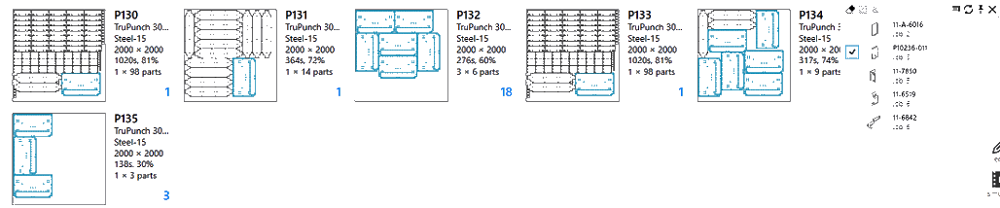

Filtro de página de tareas
El filtro de la página de tareas facilita la localización de tareas, piezas activas y nestings según los siguientes criterios:
-
Criterios de pedido como la prioridad, la fecha de vencimiento, el cliente, la pieza pedida y la cantidad, etc.
-
Estado de planificación/programación como las máquinas programadas, las chapas a realizar, las chapas completadas, las piezas anidadas, los diseños anidados, etc.
-
Atributos de nesting como eficiencia de nesting, materia prima, piezas únicas y totales, ID de tarea y recuentos.

Filtros de muestra
Nombre de la pieza/diseño
El campo Nombre de la pieza aparece en la página Tareas y Nestings. Al introducir el texto de búsqueda, se enumeran todas las chapas/tareas que contienen las piezas que coinciden con el término de búsqueda.

Al seleccionar los elementos de la sugerencia, la búsqueda se limita a la pieza o piezas seleccionadas.
 Este comportamiento también se extiende a la página de tareas. La página de tareas se puede buscar utilizando el nombre de la pieza y el nombre del diseño. Al igual que en el campo Nombre de la pieza, también se muestra una lista de sugerencias para los diseños.
Prioridad y fecha de vencimiento
Las prioridades y las fechas de vencimiento se asignan a una pieza en una tarea. El campo Prioridad, al igual que el campo "Nombre de la pieza", permite a los usuarios encontrar nestings/tareas con piezas de mayor prioridad.Las piezas de alta prioridad se pueden ubicar en un nesting resaltándolas con el ratón sobre el menú de sugerencias. Del mismo modo, las piezas con una fecha de vencimiento especificada se pueden buscar y localizar en un nesting utilizando la función de resaltado.

Aparte de los filtros de fecha de vencimiento predefinidos como Hoy, Ayer, Mañana, etc., también puede introducir los valores/rangos de fecha personalizados en formato aammdd en el cuadro de texto de búsqueda. Las expresiones de fecha aceptables son:
-
Expresiones con operadores de (des)igualdad (<, <=, >, >=, =) seguidas del valor de la fecha. Por ejemplo, >=220121 buscaría todos los artículos que vencen en o después del 21 de enero de 2022.
-
Expresiones de rango de fechas como la de la imagen siguiente. Busca todos los nestings con fecha de vencimiento entre el 28 de enero de 2022 y el 30 de enero de 2022.

Útiles empleados
Al igual que la biblioteca de piezas, los nestings también se pueden buscar por los útiles de punzonado empleados. Para buscar por útiles empleados:
-
Seleccione el campo Útiles empleados en las columnas de filtro disponibles. JFY Plus presenta una lista de todos los útiles empleados disponibles.
-
Por lo general, se trata de una lista larga, utilice términos de búsqueda como el nombre del útil, la forma, el tamaño, etc. para reducir la lista y encontrar el útil que está buscando.
-
Seleccione uno o más elementos de la lista para filtrar las piezas donde se utilizan estos útiles. Al cambiar a la vista detallada, se resaltan los útiles empleados y, al cambiar a la vista de simulación, esto se refleja en la vista previa de los útiles.

Nota: a menudo, la lista de filtros oculta el contenido de la búsqueda detrás de sí misma. Uso
Orden Alternar opacidad para alternar la transparencia. La transparencia también se puede alternar haciendo clic con el botón derecho en cualquier parte de la lista de filtros.